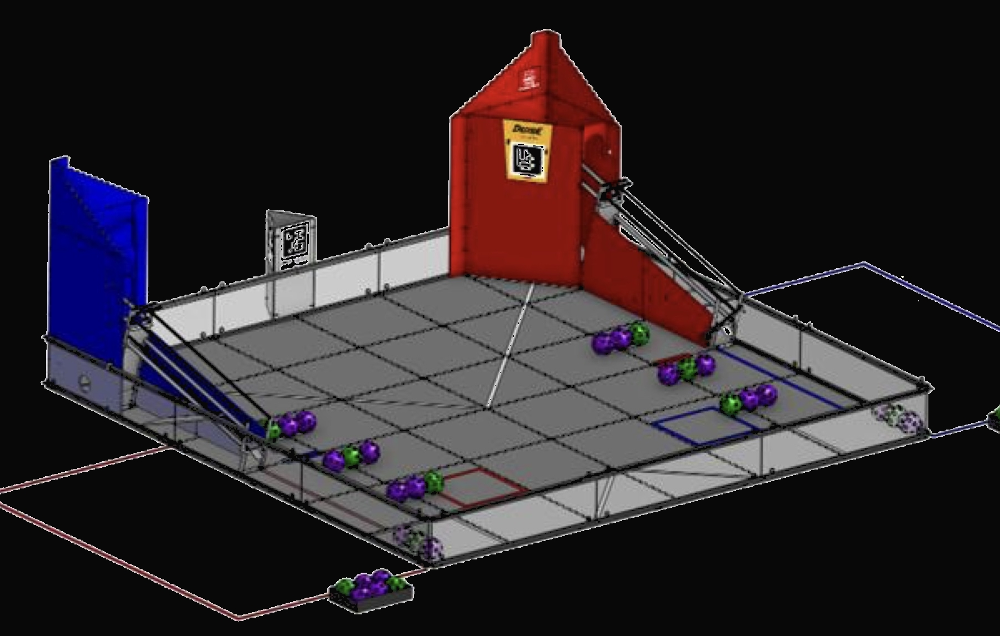

I spent most of this week working on the robot for our school's Robotix Club,
as we have a competition this Saturday (tomorrow as of writing this).
I didn't work on the project much this week, letting Weston experiment with different sound and do some research
on wavetables.
The one thing I did at the beginning of the week was fix our sound code to correctly play notes polyphonicly.
It semi-worked last week but I made the oversight of having the note in the first channel be released when any
key was released, even if the key wasn't playing a note in the first channel. With that fixed it feels a lot less
weird to play.
Here's a little video of me playing it!
So, in Robotix, I was working on making the robot's autonomous functionality. In FTC there is a new competition
each year, and this year our bots have to basically play basketball. At the start of the round the bots have an
opportunity to move autonomously before drivers are allowed to pick up their controllers, and taking advantage of this
window to score extra points is essential.

Here's a picture of the field for this year's challenge and a video of our robot in autonomous mode!
That's all from me for this week! I'm hoping that the joysticks will arrive by next week so that we can get started
making our special synth keys!